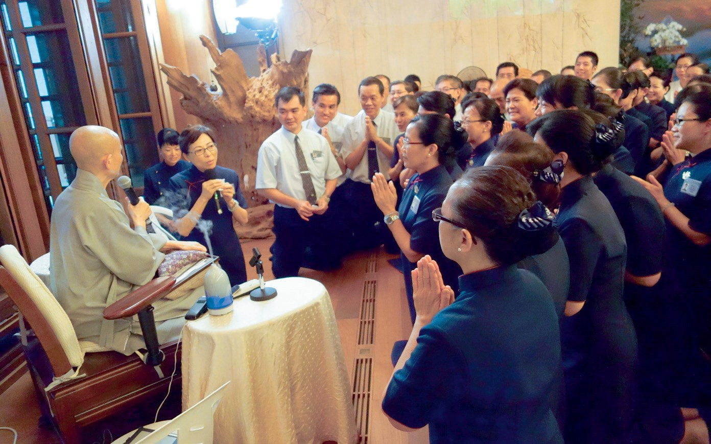
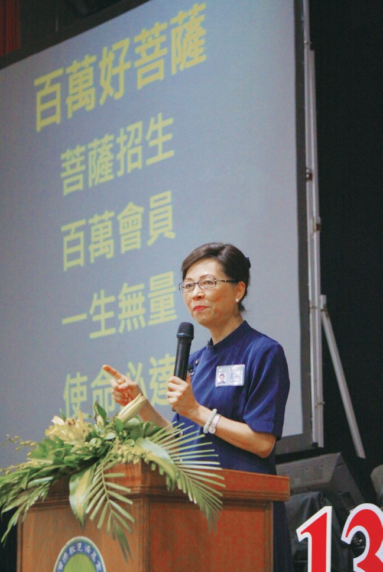
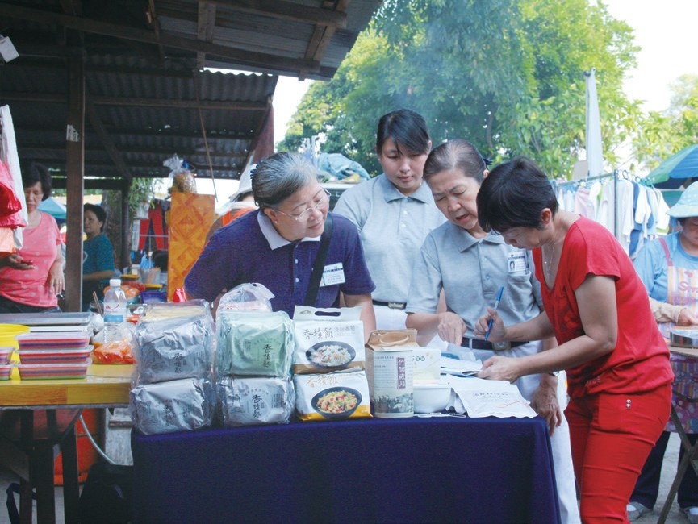
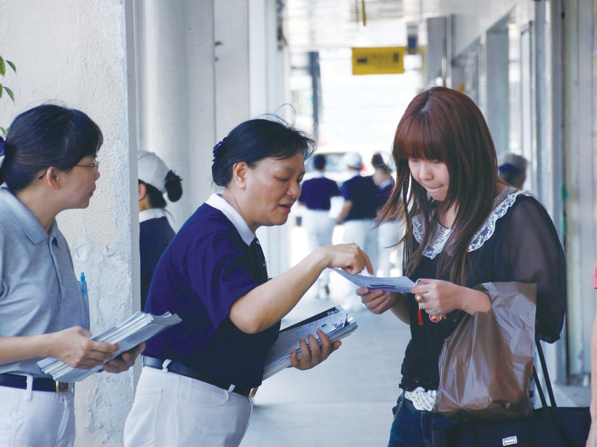
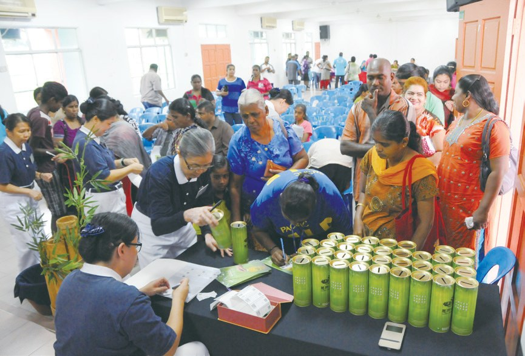
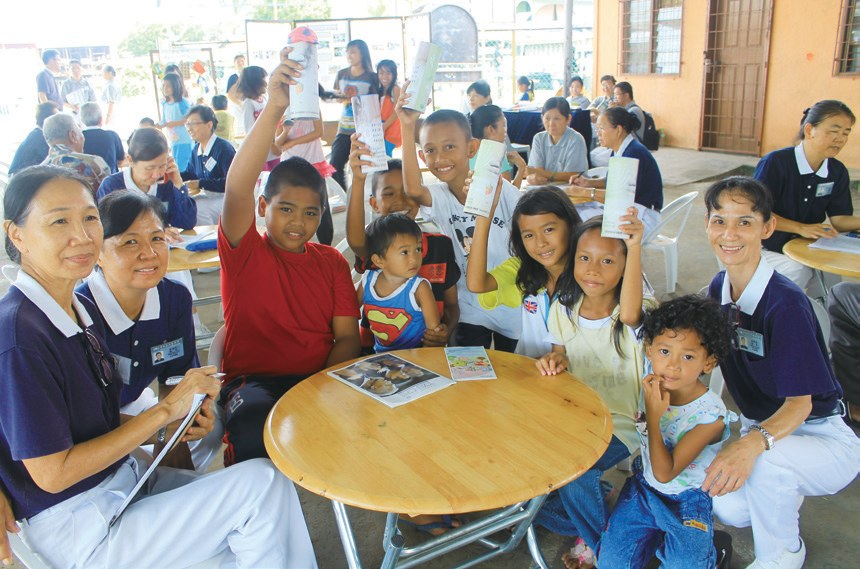
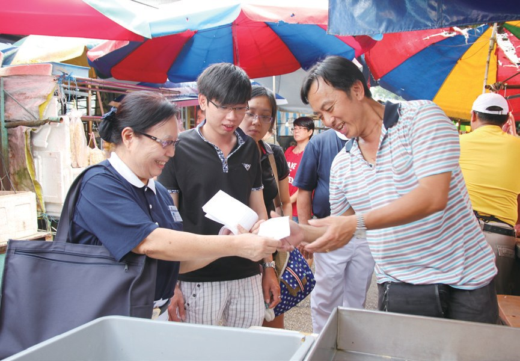
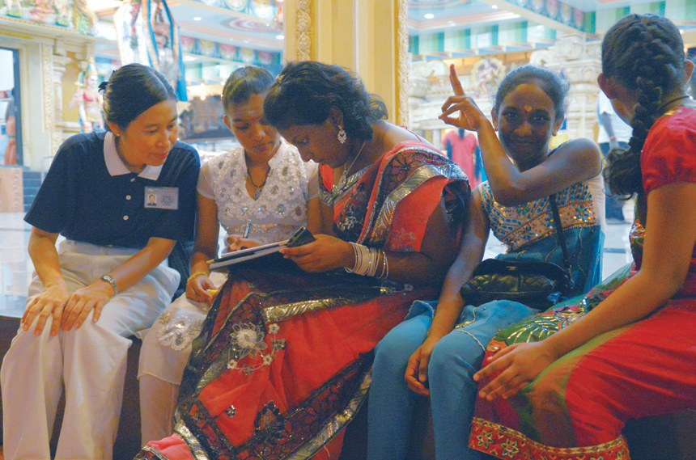
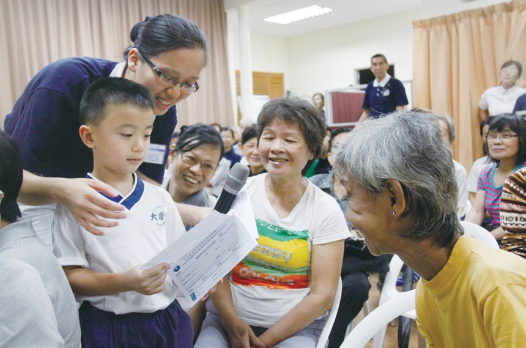

大馬連心
愛鋪滿地
一百萬位會員，是怎樣一個一個募來的？

先別急著下結論，讀完再說說你的想法～
這一篇講「百萬好菩薩」：馬來西亞慈濟人發願，要募集一百萬位會員，一起行善。
你會讀到菜市場裡被趕走的志工、把黑區變成亮區的勇氣，還有一個說「後面還有很多好人在排隊」的小孩。
下面是原書的節錄，紅色底線是我們替你標出的轉折點。
讀之前：你覺得勸人一起行善，最難的是什麼？
一個社區，一尊觀世音
1967年，三十位家庭主婦每天存五毛錢。閱讀引導
至今，慈濟志工招募會員，依舊深信著只要多一個助人者，世間就多一分善的力量，不分貧富，人人都有助人的能力。
因此，吉隆坡分會執行長簡慈露提出「一個社區，一尊觀世音菩薩」的概念，鼓勵志工人間菩薩大招生。
每個人僅有一雙眼、一雙手，所及範圍有限；假如招募了五百人，就有千隻眼、千隻手

就是一千隻手！

當時全馬各慈濟據點已有超過六十萬的會員，四大志業全面發展。南馬慈濟人於會議上發願，隔年還要再招募二十萬會員。
「慈濟人，一個人要多募三個人的愛心，募到了他的心，他就會幫忙募。……」
上人慈勉・p.561他也會去募！

無論在哪個分會，慈濟人都應不分你我，共同募心募愛，並祝福「全馬連心，以愛鋪滿全馬國土」。
第四個星期
竹筒歲月，本來就是從菜市場開始的。閱讀引導
即便暴雨來襲，攤位物品淋濕，志工們仍撐著傘走進人群中撒播善的訊息。
在為期將近一個月的古晉節，古晉慈濟人共動員五百多人次，募得七百多名會員。

募到七百多位！
志工們一開始並不知道該如何與民眾接觸，只是單純地手持《慈濟》月刊，逢人就說慈濟
支持的民眾並不多，大多數居民還是選擇避開；甚至有攤販並不看好志工能堅持下去，還口出惡言，認為捐款都是進志工的口袋

錢進了自己口袋……

「走了兩三個星期，真的沒有人理睬我，第四個星期，我就遇到葉秀芳，雖然只有一位參與浴佛，但是我很開心。」
溫麗芬表示・p.565
也很開心！

「菜市場是他們菩薩招生的道場，看了實在很令人感動，就如竹筒歲月的精神，不就是從菜市場開始的嗎？……」
上人讚歎・p.565跌進海裡也不放棄
沒有身分的移民，住在木屋區。閱讀引導

在志工的用心陪伴下，全校師生與家長共815人皆成為慈濟會員。
至2013年，狄丁岸申請補助的孩子增加至519人，慈濟志工卻因為學校老師無暇陪伴前往，心中有所顧忌，不敢貿然走入這個人人口中的黑區進行家訪。
「你們就把黑區變『亮區』！」
簡慈露鼓勵志工・p.567變亮區！

志工也曾因為當地的木橋過於簡陋，而多次跌入海中，但都無法澆熄志工的信念，靠著居民的善心，讓他們有勇氣堅持下去。
還要再去？
猜一猜閱讀引導
志工走進斗湖狄丁岸木屋區，短短三個星期招募到多少位會員？
救豬菩薩、無常阿嬤
一位媽媽、一位阿嬤、一個小孩。閱讀引導
母親吳秀梅於志工培訓課程中，聽到上人對馬來西亞慈濟人「募集百萬菩薩」的期許，她決定從鄰近的增江市場開始向小販們勸募。
有位肉販姚金寶的言語最為苛刻，但她並沒有氣餒，一而再、再而三的向對方說慈善，來來回回二十多次

漸漸打動姚金寶，讓他願意成為慈濟會員。她也經常勸姚金寶不要殺生，起初姚金寶不放在心上，但久而久之被她的毅力折服，收起豬肉攤，改經營咖啡店，讓許多人稱吳秀梅為「救豬菩薩」。

改賣咖啡了！
而她居住的社區居民多為馬來人及印度裔，因為擔心宗教敏感問題，所以許燕萍多年來「只敢募資源，不敢募會員」。

2010年，七十歲的唐金定罹患乳癌，因病體會到人生無常，於是決定結束原先的佛具店生意，參與培訓，投入慈濟志工的行列。
「我在和無常搶時間，無常一直在後面追趕我，如果有一天，無常追上來，我閃得開就沒事，閃不開，這一生就完了，所以，我要很努力的跑在無常前面。」
唐金定表示・p.573跑在無常前面！
至2019年，金定阿嬤已經成功邀約超過五百名會員

黃煒軒再接再厲，隨外婆到公司向同事募會員，有人點頭，有人視而不見。
「不會，因為後面還有很多好人在排隊。」
黃煒軒樂觀地說・p.574也不難過！
還有第二個百萬
2014年7月，全馬會員破了一百萬。閱讀引導
布施不是有錢人的專利，而是有心人的參與。
上人說・p.575- 一百萬九千五百多人2014年7月全馬會員p.575
- 兩百多萬人2022年全馬會員p.575
「百萬滿了，還有第二個百萬，目標達成，還要用心帶動，讓善心人士的初發心能更進一步的實際付出。」
上人祝福・p.575「我輕輕地鼓勵，他們重重地聽進去。……」
上人欣慰地說・p.575大家都聽進去了。
停一停：誰讓你記住了？閱讀引導
選一位你印象最深的人。沒有標準答案。
有人走了三個星期才遇到一位，有人跑了二十多次，有人跟無常搶時間，有小孩被拒絕也不難過。哪一位讓你最有感覺？

一起回頭看看吧～
回望
依本章原文整理，每一條都標了原書頁碼。閱讀引導
背後原因
為什麼要募百萬

小川募款就好，為什麼要募那麼多「會員」？
- 千手千眼
招募五百人，就有千隻眼、千隻手。p.559
- 一傳十
募到他的心，他就會幫忙募。p.561
- 救心
救世一定要從救心開始。p.576
後續發展
百萬好菩薩一路走來

小禾從一個社區一尊觀世音到兩百萬會員，經過了多少年？
- 2009
提出「一個社區，一尊觀世音菩薩」。p.559
- 2013.6.8
上人祝福募得百萬會員。p.560–561
- 2013.6.23
雪隆發願百萬好菩薩。p.561
- 2013.7
志工走入印度廟愛灑。p.571
- 2014.7
全馬會員突破一百萬。p.575
- 2022
全馬會員超過兩百多萬人。p.575
走到哪裡募到哪裡
一分善念傳出去
小禾志工去了哪些地方募心？
- 第一圈菜市場
從菜市場說慈濟。p.563
- 第二圈校園
全校師生與家長815人成為會員。p.567
- 第三圈黑區
斗湖狄丁岸黑區變為菩薩區。p.568
以上只整理本章寫到的事；書裡沒寫到的，我們不替它下結論。
回頭看讀前的選擇閱讀引導
溫麗芬走了三個星期都沒人理（p.565）；吳秀梅來來回回說了二十多次（p.569）；黃煒軒被拒絕也不難過（p.574）。開口、被拒、堅持，百萬好菩薩是這樣一個一個募來的。
為什麼大家都不放棄？
只有你自己看得到喔！
準備好了就一起出發～